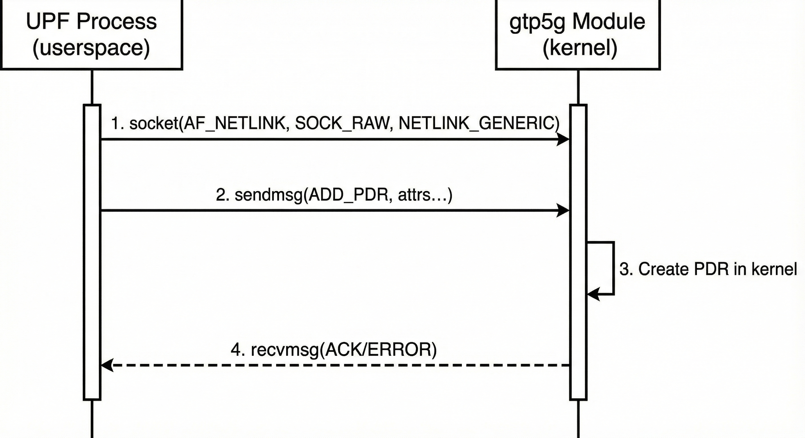

GTP5G Netlink Protocol Decoder: Implementation and Message Analysis
Note
Author: CHEN, KUAN-LIN
Date: 2025/12/10
1. Introduction
1.1 Overview
When debugging or analyzing the free5GC User Plane Function (UPF), understanding the communication between userspace applications and the kernel's GTP5G module is essential. This article explains the implementation of a Python protocol analyzer that decodes Generic Netlink messages exchanged between the UPF and the gtp5g kernel module.
The decoder intercepts strace output and translates raw hexadecimal data into human-readable GTP5G protocol information, enabling developers to observe PDR (Packet Detection Rule), FAR (Forwarding Action Rule), QER (QoS Enforcement Rule), and URR (Usage Reporting Rule) operations in real-time.
1.2 Understanding Netlink Communication
Netlink is Linux's mechanism for kernel-userspace communication. Unlike traditional system calls that are synchronous and limited in data size, Netlink provides:
- Asynchronous message passing: Applications send requests and receive responses independently
- Multicast capabilities: Kernel can notify multiple processes of events
- Extensible protocol families: Each subsystem defines its own message types
Generic Netlink (genetlink) extends this by providing a dynamic registration mechanism. Instead of hardcoding protocol numbers, kernel modules register a "family name" (e.g., gtp5g) and receive a dynamically assigned family ID at load time.
For the GTP5G module, the message flow works as follows:

1.3 Why Not Just Use strace?
While strace is an excellent tool for tracing system calls, it has significant limitations when analyzing GTP5G Netlink messages:
Limitations of Raw strace Output
-
No Protocol Awareness: strace displays Netlink messages as raw hexadecimal bytes without understanding the GTP5G protocol semantics. You see
\x05\x00\x00\x00instead ofCommand: GTP5G_CMD_ADD_PDR. -
Dynamic Family ID: Generic Netlink assigns family IDs dynamically at module load time. strace shows
type=gtp5gbut cannot correlate the numeric type with the actual protocol family or decode the command codes. -
Fragmented I/O Vectors: strace splits
sendmsgdata across multipleiov_baseentries. The first entry shows a structured Netlink header, while subsequent entries contain raw hex - making manual correlation extremely difficult. -
No Attribute Interpretation: TLV (Type-Length-Value) attributes are displayed as hex dumps. Understanding that
\x0c\x00\x07\x00means "12-byte attribute of type SEID" requires manual calculation. -
Context-Dependent Semantics: The same attribute type number has different meanings depending on the command (e.g., attribute 3 is
PRECEDENCEfor PDR butAPPLY_ACTIONfor FAR). strace cannot provide this context.
Example: Raw strace vs. Decoded Output
Raw strace output:
sendmsg(13, {msg_iov=[{iov_base={len=48, type=gtp5g, flags=NLM_F_REQUEST|NLM_F_ACK,
seq=25, pid=0}, iov_len=16}, {iov_base="\x05\x00\x00\x00", iov_len=4},
{iov_base="\x0c\x00\x07\x00\x01\x00\x00\x00\x00\x00\x00\x00", iov_len=12}], ...}, 0)
Decoded output from python program:
=== GTP5G Message ===
Direction: SEND
Command: GTP5G_CMD_ADD_PDR (5)
Attributes:
- SEID: 1
2. Architecture Overview

3. Implementation Details
3.1 Generic Netlink Protocol Structure
The GTP5G module uses Generic Netlink (genetlink) for kernel-userspace communication. Each message follows this structure:

3.2 GTP5G Family ID Detection
Generic Netlink families are dynamically assigned IDs at module load time. The decoder must discover the correct family ID:
def get_gtp5g_family_id():
"""Get gtp5g Generic Netlink family ID using 'genl' command."""
try:
result = subprocess.run(
["genl", "ctrl", "list", "name", "gtp5g"],
capture_output=True,
text=True
)
if result.returncode != 0:
return None
lines = result.stdout.split('\n')
found_name = False
for line in lines:
if "Name: gtp5g" in line:
found_name = True
elif found_name and "ID:" in line:
match = re.search(r'ID:\s+(0x[0-9a-fA-F]+)', line)
if match:
hex_id = match.group(1)
fam_id = int(hex_id, 16)
print(f"[Init] Detected gtp5g Family ID: {fam_id} ({hex_id})")
return fam_id
if found_name and "Name:" in line:
break
# Fallback: try single-line pattern
match = re.search(r'Name:\s+gtp5g\s+ID:\s+(0x[0-9a-fA-F]+)', result.stdout)
if match:
hex_id = match.group(1)
fam_id = int(hex_id, 16)
print(f"[Init] Detected gtp5g Family ID: {fam_id} ({hex_id})")
return fam_id
except FileNotFoundError:
print("[Init] Error: 'genl' command not found")
except Exception as e:
print(f"[Init] Warning: Could not detect gtp5g family: {e}")
return None
This approach is more portable than using Python libraries like pyroute2, which may have version compatibility issues. The function handles multiple output formats from the genl command and provides graceful error handling.
3.3 Parsing strace Output
Parsing strace output is the most challenging part of the decoder. The strace utility displays sendmsg calls in a complex format with multiple I/O vectors, and understanding this format is essential for correct decoding.
The strace Output Format
When strace traces a sendmsg system call on a Netlink socket, it produces output like this:
sendmsg(13, {msg_name=..., msg_namelen=12, msg_iov=[
{iov_base={len=48, type=gtp5g, flags=NLM_F_REQUEST|NLM_F_ACK, seq=25, pid=0}, iov_len=16},
{iov_base="\x05\x00\x00\x00", iov_len=4},
{iov_base="\x0c\x00\x07\x00\x01\x00\x00\x00\x00\x00\x00\x00", iov_len=12}
], msg_iovlen=3, ...}, 0) = 48
Key observations:
-
First iov_base is structured: strace recognizes Netlink headers and displays them in a human-readable format
{len=48, type=gtp5g, flags=..., seq=25, pid=0}instead of raw hex. -
Subsequent iov_base entries are hex: The Generic Netlink header (4 bytes) and attributes appear as escaped hex strings like
"\x05\x00\x00\x00". -
Multiple fragments: The message is split across multiple
iov_baseentries that must be concatenated.
Step 1: Detect GTP5G Messages
First, we identify lines containing GTP5G Netlink messages:
def is_gtp5g_message(line):
"""Check if the line contains a GTP5G netlink message."""
# Look for structured header with type=gtp5g
if 'type=gtp5g' in line:
return True
# Also check for the numeric family ID (e.g., type=0x1f)
if f'type=0x{gtp5g_family_id:x}' in line:
return True
return False
Step 2: Extract the Netlink Header
The structured header contains all fields of the 16-byte Netlink header. The decoder extracts these fields using regex pattern matching:
# Extract Netlink message header fields from strace output
header_match = re.search(
r'iov_base=\{len=(\d+),\s*type=([^,]+),\s*flags=([^,]+),\s*seq=(\d+),\s*pid=(\d+)\}',
line
)
if not header_match:
return
msg_len = int(header_match.group(1)) # Total message length
msg_type_str = header_match.group(2).strip() # "gtp5g" or numeric
flags_str = header_match.group(3).strip() # "NLM_F_REQUEST|NLM_F_ACK"
seq = int(header_match.group(4)) # Sequence number
pid = int(header_match.group(5)) # Port ID (usually 0)
# Parse message type (Generic Netlink family ID)
if 'gtp5g' in msg_type_str:
msg_type = CURRENT_GTP5G_FAMILY_ID if CURRENT_GTP5G_FAMILY_ID else 31
else:
type_match = re.search(r'0x([0-9a-fA-F]+)', msg_type_str)
msg_type = int(type_match.group(1), 16) if type_match else 0
# Filter out non-gtp5g messages
if CURRENT_GTP5G_FAMILY_ID and msg_type != CURRENT_GTP5G_FAMILY_ID:
return
Step 3: Parse Netlink Flags
The flags field requires special handling to convert symbolic names to numeric values:
# Parse Netlink message flags from strace symbolic output
flags = 0
if 'NLM_F_REQUEST' in flags_str:
flags |= 0x0001
if 'NLM_F_ACK' in flags_str:
flags |= 0x0004
if '0x200' in flags_str:
flags |= 0x0200
if '0x100' in flags_str:
flags |= 0x0100
The decoder focuses on the most commonly used flags in GTP5G communication rather than maintaining a complete mapping.
Step 4: Extract Hex Payloads
The remaining iov_base entries contain raw hex data. The decoder handles multiple strace output formats:
# Extract payload data from iov_base fields in order of appearance
# strace may output iov data in different formats depending on content
iov_patterns = [
# Pattern 1: Simple hex string iov_base="\x..."
(r'iov_base="((?:\\x[0-9a-fA-F]{2})+)"', 'hex'),
# Pattern 2: Nested structure where strace decoded first 16 bytes as nlmsghdr
# Format: iov_base={{len=N, type=X, flags=N, seq=N, pid=N}, "\x..."}
(r'iov_base=\{\{len=(\d+),\s*type=([^,]+),\s*flags=(\d+),\s*seq=(\d+),\s*pid=(\d+)\},\s*"((?:\\x[0-9a-fA-F]{2})+)"\}', 'nested_full'),
# Pattern 3: Standalone decoded nlmsghdr without trailing hex data
(r'iov_base=\{len=(\d+),\s*type=([^,]+),\s*flags=(\d+),\s*seq=(\d+),\s*pid=(\d+)\}(?!,\s*")', 'fake_header'),
]
# Collect all iov data segments with their positions
iov_items = []
for pattern, ptype in iov_patterns:
for match in re.finditer(pattern, line):
# Skip the real Netlink header (contains 'gtp5g' family name)
if ptype in ('fake_header', 'nested_full') and 'gtp5g' in match.group(0):
continue
iov_items.append((match.start(), ptype, match))
# Sort by position to maintain correct byte order
iov_items.sort(key=lambda x: x[0])
This multi-pattern approach handles various strace output formats, including cases where strace partially decodes nested Netlink messages.
Step 5: Combine and Decode
Finally, assemble the payload from collected segments and parse:
# Assemble payload from collected iov segments
payload_bytes = b''
for pos, ptype, match in iov_items:
try:
if ptype == 'hex':
hex_str = match.group(1)
payload_bytes += bytes.fromhex(hex_str.replace('\\x', ''))
elif ptype == 'nested_full':
# Handle nested structure: rebuild the 16-byte header then append hex data
len_val = int(match.group(1))
type_str = match.group(2).strip()
flags_val = int(match.group(3))
seq_val = int(match.group(4))
pid_val = int(match.group(5))
hex_str = match.group(6)
# Parse type value from type_str (e.g., "0x1f" or numeric)
type_val = int(type_str, 0) if type_str.startswith('0x') else 0
# Rebuild 16-byte nlmsghdr structure
rebuilt = struct.pack("=I", len_val)
rebuilt += struct.pack("=HH", type_val, flags_val)
rebuilt += struct.pack("=I", seq_val)
rebuilt += struct.pack("=I", pid_val)
payload_bytes += rebuilt
payload_bytes += bytes.fromhex(hex_str.replace('\\x', ''))
except (ValueError, struct.error):
continue
if len(payload_bytes) < 4:
return
# Parse Generic Netlink header (4 bytes: cmd, version, reserved)
cmd, version, reserved = struct.unpack("=BBH", payload_bytes[:4])
cmd_str = GTP5G_CMDS.get(cmd, f"UNKNOWN_CMD_{cmd}")
# Select attribute mapping based on command type
attr_mappings = {
1: GTP5G_PDR_ATTRS, 4: GTP5G_PDR_ATTRS, 7: GTP5G_PDR_ATTRS,
2: GTP5G_FAR_ATTRS, 5: GTP5G_FAR_ATTRS, 8: GTP5G_FAR_ATTRS,
3: GTP5G_QER_ATTRS, 6: GTP5G_QER_ATTRS, 9: GTP5G_QER_ATTRS,
10: GTP5G_URR_ATTRS, 12: GTP5G_URR_ATTRS, 14: GTP5G_URR_ATTRS,
11: GTP5G_BAR_ATTRS, 13: GTP5G_BAR_ATTRS, 15: GTP5G_BAR_ATTRS,
17: GTP5G_URR_ATTRS, # GET_REPORT uses URR attrs
19: GTP5G_MULTI_REPORT_ATTRS,
20: GTP5G_USAGE_STATISTIC_ATTRS,
}
attr_mapping = attr_mappings.get(cmd, GTP5G_COMMON_ATTRS)
# Parse attributes from payload (skip 4-byte GenL header)
attrs_data = payload_bytes[4:]
attributes = parse_attributes(attrs_data, attr_mapping)
Handling Edge Cases
The parser must handle several edge cases:
- Multi-line output: strace may split long lines; accumulate until
) =is seen - Non-hex iov_base: Some entries may contain printable ASCII mixed with hex
- Truncated output: Use
-s 65535with strace to avoid truncation - Multiple messages: A single
sendmsgmay contain batched requests
3.4 Command-Specific Attribute Mapping
A critical design decision is that attribute IDs are command-specific. The same attribute ID (e.g., 3) means different things for different commands:
| Attribute ID | PDR Command | FAR Command | QER Command | URR Command |
|---|---|---|---|---|
| 3 | PDR_ID (U16) | FAR_ID (U32) | QER_ID (U32) | URR_ID (U32) |
| 4 | PRECEDENCE | APPLY_ACTION | GATE | MEASUREMENT_METHOD |
| 5 | PDI (nested) | FORWARDING_PARAM | MBR (nested) | REPORTING_TRIGGER |
| ... | ... | ... | ... | ... |
The decoder selects the appropriate mapping based on the command:
cmd = genl_hdr['cmd']
if cmd in [1, 4, 7]: # ADD_PDR, DEL_PDR, GET_PDR
attr_mapping = GTP5G_PDR_ATTRS
elif cmd in [2, 5, 8]: # ADD_FAR, DEL_FAR, GET_FAR
attr_mapping = GTP5G_FAR_ATTRS
elif cmd in [3, 6, 9]: # ADD_QER, DEL_QER, GET_QER
attr_mapping = GTP5G_QER_ATTRS
# ... and so on
3.5 Attribute Value Decoding
Different attributes require different decoding strategies based on their data types:
def decode_value(attr_name, data):
"""Decode attribute value based on attribute name and data type.
Returns the decoded value (int, string, or IP address).
"""
try:
# IPv4 addresses (network byte order / big-endian)
if "IPV4" in attr_name or "ADDR_IPV4" in attr_name:
if len(data) >= 4:
return f"{data[0]}.{data[1]}.{data[2]}.{data[3]}"
# SEID and timestamps (U64)
if "SEID" in attr_name or "TIME" in attr_name:
if len(data) >= 8:
return struct.unpack("=Q", data[:8])[0]
# U32 values (IDs, TEIDs, counters, etc.)
if attr_name in ["GTP5G_LINK", "GTP5G_FAR_ID", "GTP5G_QER_ID",
"GTP5G_PDR_FAR_ID", "GTP5G_PDR_QER_ID", "GTP5G_PDR_URR_ID",
"GTP5G_URR_ID", "GTP5G_PDR_PRECEDENCE", "GTP5G_F_TEID_I_TEID",
"GTP5G_OUTER_HEADER_CREATION_O_TEID"]:
if len(data) >= 4:
return struct.unpack("=I", data[:4])[0]
# PDR_ID (U16)
if attr_name == "GTP5G_PDR_ID":
if len(data) >= 2:
return struct.unpack("=H", data[:2])[0]
# U16 values (ports, action flags)
if attr_name in ["GTP5G_FAR_APPLY_ACTION", "GTP5G_OUTER_HEADER_CREATION_PORT"]:
if len(data) >= 2:
return struct.unpack("=H", data[:2])[0]
# U8 values (flags, QFI, gate status)
if attr_name in ["GTP5G_PDI_SRC_INTF", "GTP5G_QER_GATE",
"GTP5G_QER_QFI", "GTP5G_OUTER_HEADER_REMOVAL"]:
if len(data) >= 1:
return struct.unpack("=B", data[:1])[0]
# String values (paths, policies)
if attr_name in ["GTP5G_PDR_UNIX_SOCKET_PATH",
"GTP5G_FORWARDING_PARAMETER_FORWARDING_POLICY"]:
return data.decode('utf-8', errors='ignore').rstrip('\x00')
except Exception:
pass
# Fallback: return hex string for unknown types
return "0x" + data.hex() if data else "(empty)"
The decoder handles various data types including U8, U16, U32, U64, IPv4 addresses, and strings. Nested structures are handled separately in parse_attributes using the nested_mappings dictionary.
3.6 Nested Attribute Handling
GTP5G uses nested attributes for complex structures like PDI (Packet Detection Information):
GTP5G_PDR_PDI (nested)
├── GTP5G_PDI_UE_ADDR_IPV4 (IPv4)
├── GTP5G_PDI_F_TEID (nested)
│ ├── GTP5G_F_TEID_I_TEID (U32)
│ └── GTP5G_F_TEID_GTPU_ADDR_IPV4 (IPv4)
├── GTP5G_PDI_SDF_FILTER (nested)
│ ├── GTP5G_SDF_FILTER_FLOW_DESCRIPTION (nested or string)
│ └── GTP5G_SDF_FILTER_SDF_FILTER_ID (U32)
└── GTP5G_PDI_SRC_INTF (U8)
The decoder maintains a mapping of nested attribute types to their sub-mappings:
# Nested attribute type to sub-mapping lookup
nested_mappings = {
"GTP5G_PDR_PDI": GTP5G_PDI_ATTRS,
"GTP5G_PDI_F_TEID": GTP5G_F_TEID_ATTRS,
"GTP5G_PDI_SDF_FILTER": GTP5G_SDF_FILTER_ATTRS,
"GTP5G_SDF_FILTER_FLOW_DESCRIPTION": GTP5G_FLOW_DESCRIPTION_ATTRS,
"GTP5G_FAR_FORWARDING_PARAMETER": GTP5G_FAR_FP_ATTRS,
"GTP5G_FORWARDING_PARAMETER_OUTER_HEADER_CREATION": GTP5G_OHC_ATTRS,
"GTP5G_QER_MBR": GTP5G_QER_MBR_ATTRS,
"GTP5G_QER_GBR": GTP5G_QER_GBR_ATTRS,
"GTP5G_URR_VOLUME_THRESHOLD": GTP5G_URR_VOLUME_THRESHOLD_ATTRS,
"GTP5G_URR_VOLUME_QUOTA": GTP5G_URR_VOLUME_QUOTA_ATTRS,
"GTP5G_UR_VOLUME_MEASUREMENT": GTP5G_UR_VOLUME_MEASUREMENT_ATTRS,
"GTP5G_UR": GTP5G_REPORT_ATTRS,
"GTP5G_URR_MULTI_SEID_URRID": GTP5G_URR_MULTI_SEID_URRID_ATTRS,
}
When a known nested attribute is encountered, the parser recursively processes its contents with the appropriate sub-mapping.
The parse_attributes Implementation
The core of TLV parsing is the parse_attributes function. It iterates through the raw bytes, extracting each attribute's length, type, and value while respecting 4-byte alignment:
def parse_attributes(data, mapping):
"""Parse Netlink attributes from binary data.
Args:
data: Raw bytes containing Netlink attributes
mapping: Dictionary mapping attribute type IDs to names
Returns:
Dictionary of parsed attributes with decoded values
"""
attrs = {}
offset = 0
length = len(data)
# Nested attribute type to sub-mapping lookup
nested_mappings = {
"GTP5G_PDR_PDI": GTP5G_PDI_ATTRS,
"GTP5G_PDI_F_TEID": GTP5G_F_TEID_ATTRS,
"GTP5G_PDI_SDF_FILTER": GTP5G_SDF_FILTER_ATTRS,
"GTP5G_SDF_FILTER_FLOW_DESCRIPTION": GTP5G_FLOW_DESCRIPTION_ATTRS,
"GTP5G_FAR_FORWARDING_PARAMETER": GTP5G_FAR_FP_ATTRS,
"GTP5G_FORWARDING_PARAMETER_OUTER_HEADER_CREATION": GTP5G_OHC_ATTRS,
"GTP5G_QER_MBR": GTP5G_QER_MBR_ATTRS,
"GTP5G_QER_GBR": GTP5G_QER_GBR_ATTRS,
"GTP5G_URR_VOLUME_THRESHOLD": GTP5G_URR_VOLUME_THRESHOLD_ATTRS,
"GTP5G_URR_VOLUME_QUOTA": GTP5G_URR_VOLUME_QUOTA_ATTRS,
"GTP5G_UR_VOLUME_MEASUREMENT": GTP5G_UR_VOLUME_MEASUREMENT_ATTRS,
"GTP5G_UR": GTP5G_REPORT_ATTRS,
"GTP5G_URR_MULTI_SEID_URRID": GTP5G_URR_MULTI_SEID_URRID_ATTRS,
}
while offset < length:
# Need at least 4 bytes for NLA header (len + type)
if length - offset < 4:
break
nla_len, nla_type = struct.unpack("=HH", data[offset:offset+4])
# Skip invalid attributes
if nla_len == 0:
offset += 4
continue
if nla_len < 4 or nla_len > length - offset:
break
# Extract type ID (mask out NLA_F_NESTED and NLA_F_NET_BYTEORDER flags)
type_id = nla_type & 0x3FFF
attr_name = mapping.get(type_id, f"UNKNOWN_ATTR_{type_id}")
# Type 0 is a container: expand its contents with same mapping
if type_id == 0:
container_data = data[offset+4:offset+nla_len]
nested_attrs = parse_attributes(container_data, mapping)
attrs.update(nested_attrs)
aligned_len = (nla_len + 3) & ~3
offset += aligned_len
continue
# Known nested attributes: recursively parse with appropriate sub-mapping
if attr_name in nested_mappings:
nested_data = data[offset+4:offset+nla_len]
sub_mapping = nested_mappings[attr_name]
nested_attrs = parse_attributes(nested_data, sub_mapping)
attrs[attr_name] = nested_attrs
aligned_len = (nla_len + 3) & ~3
offset += aligned_len
continue
# Regular attribute: decode value based on type
val_data = data[offset+4:offset+nla_len]
attrs[attr_name] = decode_value(attr_name, val_data)
aligned_len = (nla_len + 3) & ~3
offset += aligned_len
return attrs
Key insights
-
4-Byte Alignment: Netlink requires all attributes to be aligned on 4-byte boundaries. The formula
(nla_len + 3) & ~3rounds up to the next multiple of 4. -
NLA Flag Masking: The type field may contain flags (
NLA_F_NESTED = 0x8000,NLA_F_NET_BYTEORDER = 0x4000). We mask with0x3FFFto get the actual type ID. -
Container Handling: Type 0 acts as a container that groups related attributes. Its contents are expanded into the parent dictionary.
-
Recursive Parsing: When an attribute is in
nested_mappings, the function calls itself recursively with the appropriate sub-mapping. -
Graceful Degradation: Unknown attribute types are labeled as
UNKNOWN_ATTR_Nrather than causing parse failures, allowing partial decoding of messages with new or unsupported attributes.
4. Command Reference
Based on the gtp5g kernel module source (include/genl.h):
| Command ID | Name | Description |
|---|---|---|
| 1 | CMD_ADD_PDR | Create Packet Detection Rule |
| 2 | CMD_ADD_FAR | Create Forwarding Action Rule |
| 3 | CMD_ADD_QER | Create QoS Enforcement Rule |
| 4 | CMD_DEL_PDR | Delete PDR |
| 5 | CMD_DEL_FAR | Delete FAR |
| 6 | CMD_DEL_QER | Delete QER |
| 7 | CMD_GET_PDR | Query PDR |
| 8 | CMD_GET_FAR | Query FAR |
| 9 | CMD_GET_QER | Query QER |
| 10 | CMD_ADD_URR | Create Usage Reporting Rule |
| 11 | CMD_ADD_BAR | Create Buffering Action Rule |
| 12 | CMD_DEL_URR | Delete URR |
| 13 | CMD_DEL_BAR | Delete BAR |
| 14 | CMD_GET_URR | Query URR |
| 15 | CMD_GET_BAR | Query BAR |
| 16 | CMD_GET_VERSION | Get module version |
| 17 | CMD_GET_REPORT | Get usage report |
| 18 | CMD_BUFFER_GTPU | Buffer GTP-U packets |
| 19 | CMD_GET_MULTI_REPORTS | Batch get reports |
| 20 | CMD_GET_USAGE_STATISTIC | Get statistics |
5. Analyzing Common GTP5G Messages
This section walks through real-world GTP5G messages captured during a UERANSIM UE registration and PDU session establishment. Understanding these message patterns helps debug 5G core network issues.
5.1 Message Flow Overview
When a UE connects and establishes a PDU session, the SMF instructs the UPF to create the following rules. The typical creation sequence is:
- Create FAR (Forwarding Action Rule) - defines how to forward packets
- Create QER (QoS Enforcement Rule) - defines QoS parameters
- Create URR (Usage Reporting Rule) - defines usage reporting
- Create PDR (Packet Detection Rule) - defines which packets to match and references FAR/QER/URR
Note: PDRs are created last because they reference the other rules by ID.
5.2 Creating a FAR (Forwarding Action Rule)
Decoded Output:
------------------------------------------------------------
GTP5G MESSAGE
Len: 56, FamilyID: 31, Seq: 84
Command: GTP5G_CMD_ADD_FAR (v0)
Attributes:
GTP5G_LINK: 4
GTP5G_FAR_ID: 9
GTP5G_FAR_SEID: 1
GTP5G_FAR_APPLY_ACTION: 2
------------------------------------------------------------
Analysis:
- Command:
GTP5G_CMD_ADD_FAR(command ID 2) - Creates a new Forwarding Action Rule - LINK:
4- Network interface index (the gtp5g tunnel device, e.g.,upfgtp) - FAR_ID:
9- Unique identifier for this FAR within the session - SEID:
1- Session Endpoint Identifier linking this rule to a PFCP session -
APPLY_ACTION:
2- Bitmask defining the action:- Bit 0 (0x01): DROP
- Bit 1 (0x02): FORW (Forward) ← This FAR forwards packets
- Bit 2 (0x04): BUFF (Buffer)
- Bit 3 (0x08): NOCP (Notify CP)
- Bit 4 (0x10): DUPL (Duplicate)
5.3 Creating a PDR (Packet Detection Rule)
PDRs define which packets to match and what actions to apply. Modern PDRs often include SDF (Service Data Flow) filters for fine-grained traffic classification.
Decoded Output (Uplink PDR with SDF Filter):
------------------------------------------------------------
GTP5G MESSAGE
Len: 264, FamilyID: 31, Seq: 95
Command: GTP5G_CMD_ADD_PDR (v0)
Attributes:
GTP5G_LINK: 4
GTP5G_PDR_ID: 9
GTP5G_PDR_SEID: 1
GTP5G_PDR_PRECEDENCE: 128
GTP5G_PDR_PDI:
GTP5G_PDI_SRC_INTF: 0
GTP5G_PDI_F_TEID:
GTP5G_F_TEID_I_TEID: 6
GTP5G_F_TEID_GTPU_ADDR_IPV4: 192.168.11.130
GTP5G_PDI_UE_ADDR_IPV4: 10.60.0.100
GTP5G_PDI_SDF_FILTER:
GTP5G_SDF_FILTER_FLOW_DESCRIPTION:
GTP5G_FLOW_DESCRIPTION_ACTION: 1
GTP5G_FLOW_DESCRIPTION_DIRECTION: 2
GTP5G_FLOW_DESCRIPTION_PROTOCOL: 255
GTP5G_FLOW_DESCRIPTION_SRC_IPV4: 0.0.0.0
GTP5G_FLOW_DESCRIPTION_SRC_MASK: 0.0.0.0
GTP5G_FLOW_DESCRIPTION_DEST_IPV4: 1.1.1.1
GTP5G_FLOW_DESCRIPTION_DEST_MASK: 255.255.255.255
GTP5G_FLOW_DESCRIPTION_SRC_PORT: (none)
GTP5G_FLOW_DESCRIPTION_DEST_PORT: (none)
GTP5G_OUTER_HEADER_REMOVAL: 0
GTP5G_PDR_FAR_ID: 9
GTP5G_PDR_URR_ID: 8
GTP5G_PDR_QER_ID: 8
GTP5G_PDR_UNIX_SOCKET_PATH: /
------------------------------------------------------------
Analysis:
- Command:
GTP5G_CMD_ADD_PDR(command ID 1) - Creates a Packet Detection Rule - PDR_ID:
9- Unique identifier for this PDR - PRECEDENCE:
128- Priority (lower = higher priority). When multiple PDRs match, the one with lowest precedence wins - PDI (Packet Detection Information): Nested structure defining match criteria:
- SRC_INTF:
0- Source interface (0=Access/N3, indicating uplink traffic) - F_TEID: Fully-qualified Tunnel Endpoint ID:
- I_TEID:
6- Local TEID allocated by UPF - GTPU_ADDR_IPV4:
192.168.11.130- UPF's N3 interface IP
- I_TEID:
- UE_ADDR_IPV4:
10.60.0.100- Match packets from this UE IP - SDF_FILTER: Service Data Flow filter for traffic classification:
- FLOW_DESCRIPTION: Defines the IP flow to match:
- ACTION:
1(permit) - DIRECTION:
2(bidirectional) - PROTOCOL:
255(any protocol) - DEST_IPV4/MASK:
1.1.1.1/255.255.255.255- Match traffic to specific destination
- SRC_INTF:
- OUTER_HEADER_REMOVAL:
0- Remove GTP-U header (for uplink traffic) - FAR_ID:
9- References the FAR to execute when this PDR matches - URR_ID:
8- References the Usage Reporting Rule for traffic accounting - QER_ID:
8- References the QoS Enforcement Rule
5.4 Creating a QER (QoS Enforcement Rule)
QERs define QoS parameters including gate status, QoS Flow Identifier (QFI), and Maximum Bit Rate (MBR) limits.
Decoded Output (QER with MBR):
------------------------------------------------------------
GTP5G MESSAGE
Len: 100, FamilyID: 31, Seq: 88
Command: GTP5G_CMD_ADD_QER (v0)
Attributes:
GTP5G_LINK: 4
GTP5G_QER_ID: 7
GTP5G_QER_SEID: 1
GTP5G_QER_GATE: 0
GTP5G_QER_MBR:
GTP5G_QER_MBR_UL_HIGH32: 3906
GTP5G_QER_MBR_UL_LOW8: 64
GTP5G_QER_MBR_DL_HIGH32: 3906
GTP5G_QER_MBR_DL_LOW8: 64
GTP5G_QER_QFI: 1
------------------------------------------------------------
Analysis:
- Command:
GTP5G_CMD_ADD_QER(command ID 3) - Creates a QoS Enforcement Rule - QER_ID:
7- Unique identifier for this QER - GATE:
0- Gate status (0=OPEN, allowing traffic to pass; 1=CLOSED) - MBR (Maximum Bit Rate): Nested structure defining rate limits:
- UL_HIGH32/LOW8: Uplink rate =
(3906 << 8) | 64= 999,488 kbps ≈ 1 Gbps - DL_HIGH32/LOW8: Downlink rate =
(3906 << 8) | 64= 999,488 kbps ≈ 1 Gbps - The bit rate is encoded as a 40-bit value split across HIGH32 and LOW8 fields
- UL_HIGH32/LOW8: Uplink rate =
- QFI:
1- QoS Flow Identifier (values 1-63 map to different 5QI classes) - SEID:
1- Links to the PFCP session
Decoded Output (Simple QER without MBR):
------------------------------------------------------------
GTP5G MESSAGE
Len: 64, FamilyID: 31, Seq: 90
Command: GTP5G_CMD_ADD_QER (v0)
Attributes:
GTP5G_LINK: 4
GTP5G_QER_ID: 9
GTP5G_QER_SEID: 1
GTP5G_QER_GATE: 0
GTP5G_QER_QFI: 1
------------------------------------------------------------
This simpler QER only sets the gate status and QFI without rate limiting.
5.5 Deleting Rules (Session Teardown)
When a PDU session ends or rules are updated, the UPF removes associated rules. The deletion sequence typically follows: FAR → QER → URR → PDR.
Decoded Output:
------------------------------------------------------------
GTP5G MESSAGE
Len: 48, FamilyID: 31, Seq: 65
Command: GTP5G_CMD_DEL_FAR (v0)
Attributes:
GTP5G_LINK: 4
GTP5G_FAR_ID: 5
GTP5G_FAR_SEID: 1
------------------------------------------------------------
GTP5G MESSAGE
Len: 48, FamilyID: 31, Seq: 69
Command: GTP5G_CMD_DEL_QER (v0)
Attributes:
GTP5G_LINK: 4
GTP5G_QER_ID: 5
GTP5G_QER_SEID: 1
------------------------------------------------------------
GTP5G MESSAGE
Len: 48, FamilyID: 31, Seq: 72
Command: GTP5G_CMD_DEL_URR (v0)
Attributes:
GTP5G_LINK: 4
GTP5G_URR_ID: 8
GTP5G_URR_SEID: 1
------------------------------------------------------------
GTP5G MESSAGE
Len: 48, FamilyID: 31, Seq: 76
Command: GTP5G_CMD_DEL_PDR (v0)
Attributes:
GTP5G_LINK: 4
GTP5G_PDR_ID: 7
GTP5G_PDR_SEID: 1
------------------------------------------------------------
Analysis:
- Delete commands identify specific rules by their ID and SEID
- FAR deletion: Removes forwarding rule FAR_ID=5 from session SEID=1
- QER deletion: Removes QoS rule QER_ID=5
- URR deletion: Removes usage reporting rule URR_ID=8
- PDR deletion: Removes packet detection rule PDR_ID=7
- The sequence matters: forwarding rules should be deleted before detection rules to prevent packet loss
5.6 Uplink vs Downlink PDR Patterns
Uplink PDR (N3 → N6, packets from UE to internet):
GTP5G_PDR_PDI:
GTP5G_PDI_SRC_INTF: 0 # Source = Access (N3)
GTP5G_PDI_F_TEID: # Match on incoming GTP-U tunnel
GTP5G_F_TEID_I_TEID: 6
GTP5G_F_TEID_GTPU_ADDR_IPV4: 192.168.11.130
GTP5G_PDI_UE_ADDR_IPV4: 10.60.0.100
GTP5G_OUTER_HEADER_REMOVAL: 0 # Remove GTP-U header
Downlink PDR (N6 → N3, packets from internet to UE):
GTP5G_PDR_PDI:
GTP5G_PDI_SRC_INTF: 1 # Source = Core (N6)
GTP5G_PDI_UE_ADDR_IPV4: 10.60.0.100 # Match on UE destination IP
GTP5G_PDI_SDF_FILTER: # Optional: filter specific traffic
GTP5G_SDF_FILTER_FLOW_DESCRIPTION:
GTP5G_FLOW_DESCRIPTION_SRC_IPV4: 1.1.1.1
GTP5G_FLOW_DESCRIPTION_SRC_MASK: 255.255.255.255
# No OUTER_HEADER_REMOVAL (FAR will add GTP-U header)
The key differences:
- Uplink uses
SRC_INTF: 0(Access) and includesF_TEIDfor tunnel matching - Downlink uses
SRC_INTF: 1(Core) and matches onUE_ADDR_IPV4 - Uplink includes
OUTER_HEADER_REMOVALto decapsulate GTP-U - Downlink FAR will include
OUTER_HEADER_CREATIONfor encapsulation
5.7 FAR with Forwarding Parameters (GTP-U Encapsulation)
For downlink traffic, the FAR includes GTP-U encapsulation parameters:
Decoded Output:
------------------------------------------------------------
GTP5G MESSAGE
Len: 96, FamilyID: 31, Seq: 156
Command: GTP5G_CMD_ADD_FAR (v0)
Attributes:
GTP5G_LINK: 4
GTP5G_FAR_ID: 2
GTP5G_FAR_SEID: 1
GTP5G_FAR_APPLY_ACTION: 2
GTP5G_FAR_FORWARDING_PARAMETER:
GTP5G_FORWARDING_PARAMETER_OUTER_HEADER_CREATION:
GTP5G_OUTER_HEADER_CREATION_O_TEID: 1
GTP5G_OUTER_HEADER_CREATION_PEER_ADDR_IPV4: 10.200.200.1
------------------------------------------------------------
Analysis:
- FORWARDING_PARAMETER: Nested structure for packet encapsulation
- OUTER_HEADER_CREATION: Defines GTP-U tunnel parameters for outgoing packets:
- O_TEID:
1- Outgoing TEID assigned by the gNB - PEER_ADDR_IPV4:
10.200.200.1- gNB's N3 interface IP address
- O_TEID:
5.8 Usage Reporting (GET_REPORT)
The UPF can query usage reports from URRs to collect traffic statistics:
Decoded Output:
------------------------------------------------------------
GTP5G MESSAGE
Len: 48, FamilyID: 31, Seq: 78
Command: GTP5G_CMD_GET_REPORT (v0)
Attributes:
GTP5G_LINK: 4
GTP5G_URR_ID: 8
GTP5G_URR_SEID: 1
------------------------------------------------------------
GTP5G MESSAGE
Len: 48, FamilyID: 31, Seq: 81
Command: GTP5G_CMD_GET_REPORT (v0)
Attributes:
GTP5G_LINK: 4
GTP5G_URR_ID: 7
GTP5G_URR_SEID: 1
------------------------------------------------------------
Analysis:
- Command:
GTP5G_CMD_GET_REPORT(command ID 17) - Queries usage statistics - URR_ID: Identifies which Usage Reporting Rule to query
- SEID: Session Endpoint Identifier
- The kernel module responds with volume measurements (bytes/packets sent/received)
- GET_REPORT is typically called before deleting URRs to collect final statistics
5.9 Querying Existing Rules (GET_FAR)
The UPF can query existing rules to verify their state:
Decoded Output:
------------------------------------------------------------
GTP5G MESSAGE
Len: 48, FamilyID: 31, Seq: 99
Command: GTP5G_CMD_GET_FAR (v0)
Attributes:
GTP5G_LINK: 4
GTP5G_FAR_ID: 10
GTP5G_FAR_SEID: 1
------------------------------------------------------------
Analysis:
- Command:
GTP5G_CMD_GET_FAR(command ID 8) - Queries an existing FAR - This is often used to check if a FAR exists before updating or to verify rule installation
- Similar GET commands exist for PDR, QER, URR, and BAR
5.10 Common Debugging Scenarios
| Symptom | What to Check |
|---|---|
| UE cannot reach internet | Check uplink PDR exists with correct F_TEID and SRC_INTF=0 |
| Internet cannot reach UE | Check downlink PDR exists with UE_ADDR_IPV4 and SRC_INTF=1 |
| Packets dropped silently | Verify FAR APPLY_ACTION is FORW (0x02), not DROP (0x01) |
| Wrong destination | Check FAR OUTER_HDR_CREATION has correct O_TEID and PEER_ADDR |
| QoS not applied | Verify QER exists, check GATE=0 (OPEN), and PDR has correct QER_ID |
| Rate limiting not working | Check QER MBR values (UL_HIGH32/LOW8, DL_HIGH32/LOW8) |
| Traffic not matching PDR | Verify SDF_FILTER FLOW_DESCRIPTION matches expected traffic pattern |
| Usage stats missing | Ensure URR exists and PDR references correct URR_ID |
| Session cleanup issues | Ensure DEL commands include correct ID and SEID |
| Rule update failures | Use GET commands to verify rule state before modification |
6. Conclusion
This deep dive into GTP5G Netlink message decoding illustrates how to bridge the gap between low-level kernel communication and high-level protocol understanding. By leveraging strace output and a custom decoder, developers can gain real-time insights into the 5G User Plane's behavior.
From a protocol analysis perspective, Generic Netlink provides a structured, extensible mechanism for kernel-userspace IPC. The key insight is that Netlink is essentially a message-passing system with typed payloads. Once you understand the 16-byte header structure and 4-byte aligned TLV attributes, any Netlink-based protocol becomes parseable.
For GTP5G specifically, the message flow reveals how the 5G User Plane operates: the SMF orchestrates session rules via PFCP, which the UPF translates into kernel-level PDR/FAR/QER rules through Netlink. By intercepting these messages, we gain visibility into the exact packet matching and forwarding logic installed in the data plane. This visibility is invaluable for understanding and debugging complex 5G core network issues.
References
- free5GC Project
- gtp5g Kernel Module
- Linux Generic Netlink HOWTO
- 3GPP TS 29.244 - PFCP Protocol
- Linux Netlink Manual
About Me
My name is Chen, Kuan-Lin. I've recently started diving into the world of 5G Core Networks and contributing to the free5GC project. My future research direction is focused on Network Slicing. I hope this article was helpful to you! If you have any questions or just want to chat about this topic, feel free to reach out and connect with our lab team.
- GitHub: DBGR18